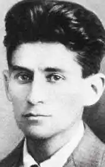
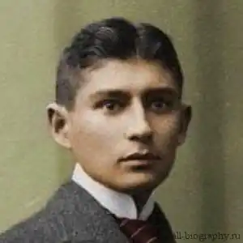

ФРАНЦ КАФКА
(1883-1924)
Щоб краще збагнути суть твору Кафки "Перевтілення", треба добре знати життєвий шлях самого автора. Тільки детальне розуміння біографії Франца Кафки дасть змогу краще збагнути розкриття долі "маленької людини" у суспільстві через твір "Перевтілення". Нерідко фантастичність твору відволікає недосвідчених читачів від суті твору, але для тих, хто справді шанує філософські глибини творчості Кафки, цей твір досить цікавий і повчальний. Але перш ніж розглянути сам твір, його особливості, треба звернутися до біографії Ф. Кафки. Кафка — австрійський письменник, пражанин. Будиночок, де він народився в 1883 році, знаходиться в одному з вузьких провулків, що ведуть до громади собору Святого Вітта. Зв'язок письменника з містом — містичний і повний протиріч. Любов-ненависть порівняна хіба з тією, що він відчував до батька-буржуа, то вибився з убогості та так і не зрозумів свого геніального сина. Десь між простацькою мудрістю Ярослава Гашека, що породила Швейка, і трагічною фантазією Франца Кафки, творця Грегора — героя новели "Перевтілення",— полягає ментальність пражан, які пережили і сторіччя під Німеччиною й Австрією, і роки фашистської окупації, і десятиліття в обіймах "старшого брата". У сьогоднішній вільній, бурхливо розбудованій, невсипущій Празі, що залучає туристів з усього світу, Франц Кафка став однією з культових постатей. Він присутній і на книжкових прилавках, і в працях університетських учених, і на сувенірних майках, якими жваво торгують на Вацлавській площі. Тут він суперничає а президентом Гавелом і бравим солдатом Швейком. Варто помітити, що не тільки більшовики, слідом за Маяковським, втілили імена своїх наркомів, артистів, письменників у пароплави й рядки. Якщо не лайнер, то експрес названий ім'ям ангора "Перевтілення". До речі, і в столиці Баварії є вулиця Кафки. Творчість та ім'я Франца Кафки досить популярні на Заході. У багатьох творах зарубіжних письменників легко виявити мотиви та образи, які навіяні саме творчістю Кафки,— вона вплинула не тільки на художників, які належали літературному авангардові. Кафка належить до тих письменників, зрозуміти й розтлумачити яких не так просто. Франц Кафка народився в сім'ї празького єврея, оптового торговця галантерейними товарами, в Празі (1883 р.) Благоустрій родини поступово зростав, але стосунки всередині сім'ї залишилися при цьому у світі темного міщанства, де всі інтереси зосередились на "справі", де мати безсловесна, а батько безперервно хизується тим приниженням і знегодами, яких він зазнав для того, щоб вибитися в люди. І в цьому темному і затхлому світі народився і ріс письменник не тільки тендітний і слабкий фізично, але й чутливий до всякого прояву несправедливості, неповаги, грубості та корисливості. Письменник у 1901 році вступає до Празького університету, спочатку вивчає хімію і германістику, потім юриспруденцію. Після закінчення університету працює в суді, страховому бюро де працює майже до кінця життя. Твори Кафки досить образні, метафоричні. Його невеликий твір "Перевтілення", романи "Процес", "Замок" — це все переломлена в очах поета навколишня реальність, тогочасне суспільство. При житті Ф. Кафки побачили світ такі книги: "Споглядання" (1913), "Кочегар" (1913), "Перевтілення" (1915), "Вирок" (1916), "Сільський лікар" (1919), "Голодар" (1924). Основні твори були видані після смерті письменника. Серед них "Процес" (1925), "Замок" (1926), "Америка" (1927). Твори Кафки перетворилися на інтелектуальні бестселери. Є різні причини такої популярності: наочність підтверджень давньої сентенції, що напрошується: "Ми породжені, щоб Кафку зробити минулим",— усе-таки навряд чи пояснює все і до кінця. Як не намагалися представити Кафку творцем абсурду, що запанував у світі, таке прочитання є лише однією з граней його творчої індивідуальності: суттєвою, але не визначальною. Зі щоденників це видно відразу. Щоденники взагалі багато чого коригують у сформованих уявленнях" які своєю стійкістю перетворили Кафку якщо не на символ, то на значиме ім'я із певним набором конотацій. Відчуваючи, що записи, котрі робилися Кафкою лише для себе, часом дуже не відповідають судженням про нього, що стали безперечними для масової свідомості, виконувач духівниці і перший біограф письменника Макс Брід не поспішав з їхньою публікацією. Перша збірка з'явилася лише через десять років після того, як були надруковані два знаменитих романи, а слідом за цим і "Америка". Кафка в житті видавався невпевненим в собі, змученим ваганнями щодо своєї літературної та людської спроможності. Яких почуттів зазнав би Кафка, якби йому випало дожити до днів запізнілої слави? Швидше за все жах — щоденники, у яких він відвертий, як ніде більше, роблять таке припущення майже безсумнівним. Адже про Кафку думають завжди як про явище, і навіть не стільки літературне, скільки соціальне, тому поширеним стає слівце "кафкіанський" — визначення, що трактує безглуздість, відразу до пізнання, оскільки будь-кому це відомо з власного сумного досвіду,— і книги цього празького вигнанця починають сприйматись як такий собі белетризований посібник для того, хто вивчає механіку тотального чи бюрократичного всевладдя трагічного алогізму, буденності. Але він не хотів бути "явищем". Менш за все він усвідомлював себе як репрезентативну фігуру, бо так ніколи й не відчував справжньої причетності до того, чим жили, до чого прагнули інші. Розбіжність з ними, болісні незримі бар'єри — от предмет найбільш болісних роздумів, якими переповнюються щоденники упродовж тринадцяти років, що Кафка їх вів, перегорнувши останню сторінку у червні 1923-го, менше аніж за місяць до смерті. Ці міркування майже незмінно носять форму гірких докорів самому собі. "Я відділений від усіх речей порожнім простором, через межі якого я навіть і не прагну пробитися",— щось у такому дусі повторюється знов і знов. Зрозуміло, як тяжко переживав Кафка свій сердечний параліч, як він найчастіше називає цю байдужість, що не залишає "навіть щілинки для сумніву чи віри, для любовної відрази чи для відваги або страху перед чимось визначеним". Останнє уточнення найвищою мірою важливе: байдужість не була нечутливістю. Вона була тільки наслідком особливого психологічного стану, що не дозволяв Кафці відчувати як щось серйозне і важливе для нього все те, що мало визначеність і значущість в очах довкілля. Чи йдеться про кар'єру, про матримоніальні перспективи ("якщо я доживу до сорока років, то, напевно, одружуся зі старою дівкою з виплюнутими наперед, не прикритими верхньою губою зубами"), навіть про світову війну, що почалася — він думає по-своєму, прекрасно розуміючи, що цією особистістю думки і почуття лише збільшується його нескінченна самотність і що отут нічого не поправити. "Який дивовижний світ тісниться в моїй голові! Але як мені звільнитися від нього і звільнити його, не розірвавши?" Творчість Кафки багато разів намагалися витлумачити саме як таке звільнення, оскільки в тім же записі 1913 року далі сказано, що позбутися химер, які опанували свідомістю, конче необхідно, "для того я і живу на світі". Але якщо й справді проза була для Кафки спробою подібного "витиснення", наслідком була невдача, адже — читачам щоденників це видно занадто чітко — ніякої сублімації не відбулося: комплекси, роздратування, страхи тільки підсилювалися в Кафки з кожним прожитим роком, і тональність записів робилася лише більш драматичною. Хоча капітуляції не було. Просто з кожним роком Кафка все безперечніше переконувався в тім, що за усією своєю людською суттю він, на тлі навколишнього, інший, що він існує ніби в інших вимірах, в іншій системі понять. І що це, власне, є магістральний сюжет його життя — отже, його прози теж. Він справді інший в усьому, аж до дрібниць, себто, якщо придивитися, його ніщо не зближує і не ріднить хоча б із тими, хто відіграв справді велику роль у його долі, як той же Брід, чи Феліца Бауер, чи чеська журналістка Мілена Есенська, з якими було двоє заручин, обидвоє розірвані. Тяжка ситуація, що постійно викликає в Кафки напади відрази до себе чи неподоланне почуття повної безнадійності. Він намагається боротися із собою, намагається узяти себе в руки, але такі настрої опановують ним настільки сильно, що від них уже немає захисту. І тоді з'являються записи, що говорять самі за себе, як от цей, стосовно жовтня 1921-го: "Усе — ілюзія: родина, служба, друзі, вулиця; усе — фантазія, більш-менш близька, і дружина — фантазія; найближча ж правда тільки в тім, що ти б'єшся головою об стіну камери, у якій немає ні вікон, ні дверей". Про Кафку пишуть як про аналітика відчуження, що позначилося на всім характері людських стосунків у тогочасному житті, як про письменника, наділеного особливим даром зображення всіляких соціальних деформацій, як про "песимістичного конформіста", якого чомусь протиставили страшним фантомам, що зробилися реальнішими, ніж зрима вірогідність, як про прозаїка, який завжди відчував грань між фантастичним і тим, що пізнається. Усе справедливо, і, однак, не зникає відчуття, що окремішнє, нехай і дуже значне, сприймається за суть. Поки не вимовлене ключове слово, інтерпретації, навіть найвинахідливіші, що спираються на перевірені факти, усе одно будуть виглядати недостатніми. Або принаймні, упускають щось першорядно важливе. Слово вимовив сам Кафка, причому багато разів: це слово — самотність, і таке абсолютне, "що його може назвати тільки росіянин" У його щоденниках воно часто заміняється синонімами, і Кафка говорить про знову пережитий ним нестерпний стан, коли важким стає будь-яке спілкування, про опанування своєї приреченості на нещастя, про те, що усюди й завжди він себе відчуває чужим. Але, по суті, описується все та ж сама незрима камера без вікон і дверей, усе те ж "головою об стіну", що стає вже не життєвою, а метафізичною реальністю. Вона нагадує про себе й у грозові хвилини, і в найпрозаїчніших обставинах, а щоденник її фіксує з безпрецедентною повнотою свідчення. Бували роки, коли Кафка робив тільки уривчасті записи, а 1918-й відсутній узагалі (як характерно! Адже це був рік закінчення війни, катастрофи Австро-Угорщини, німецької революції — стільки подій, але вони немовби не торкнулися Кафки.